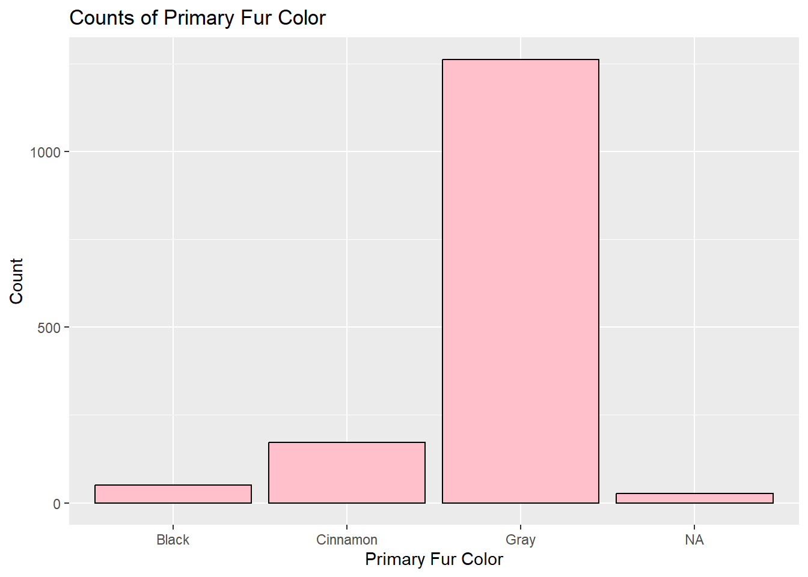
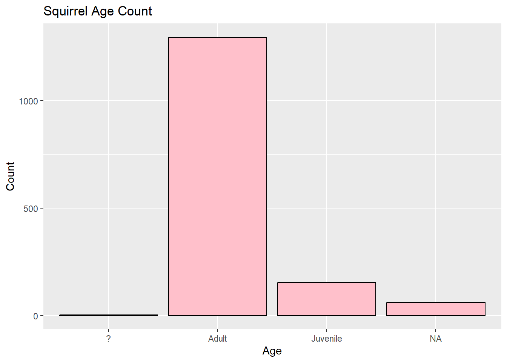
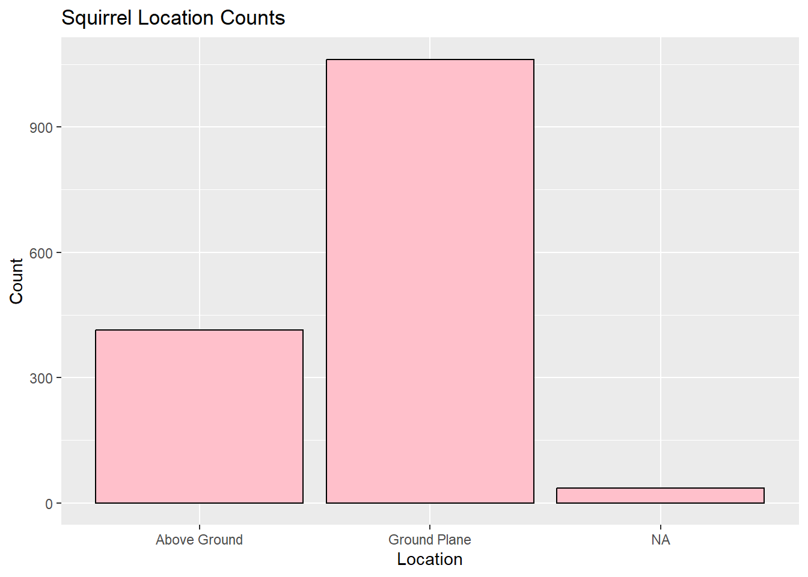
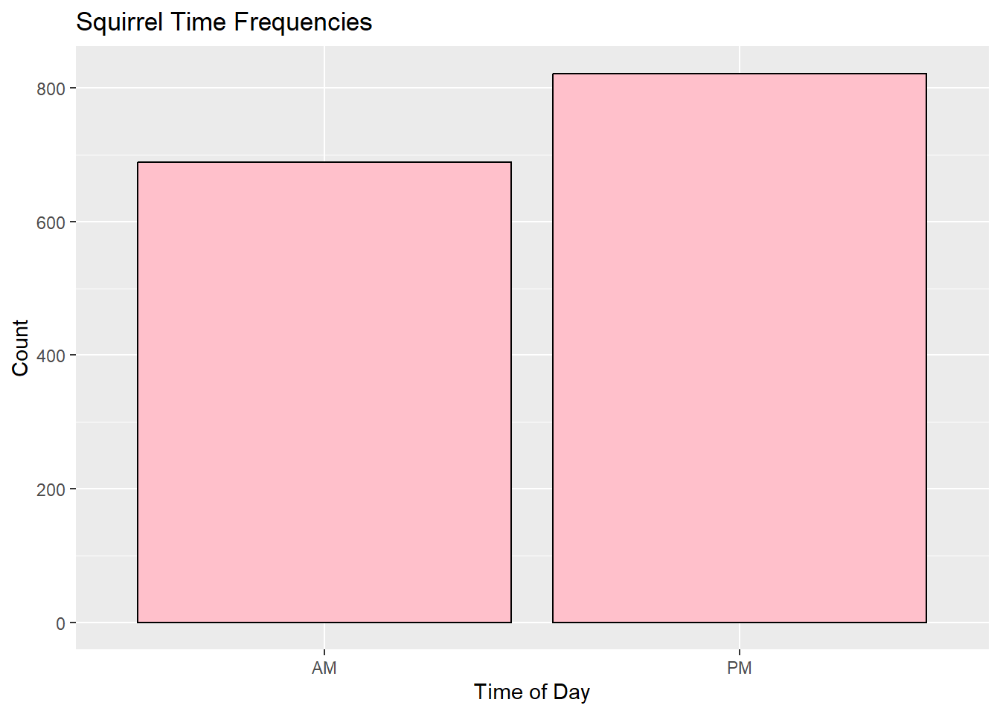

This is an analysis of the NYC Squirrels Census dataset. This dataset includes information regarding squirrel fur color, behavior, and geographical location. This analysis will determine commonalities among squirrels like most common fur color, most common behavior, activity compared between day and night, as well as comparisons between juveniles and adults. Does most commonly seen behavior differ from juveniles and adults? Does commonly seen behavior differ at night/during the day? The intention behind this analysis is to develop a further understanding of the information in this dataset.
Introduction
This dataset contains observations from the NYC Squirrel Census. 2,373 squirrels were observed in Central Park. Juveniles and adults were observed. Fur color was observed, as well as behavior and geographical location. Behaviors observed include climbing, chasing, eating, foraging, interactions with humans, and communicative behaviors like kuks, quaas, moans, tail twitches, etc. This exploratory analysis seeks to answer the following questions:
What is the most common fur color?
How many squirrels of each fur color are there?
How many juveniles and adults are there?
Are squirrels more likely to be above ground or on the ground plane?
Are squirrels seen more at night or during the day?
What is the most commonly seen behavior?
Does most commonly seen behavior differ from juveniles and adults?
Does commonly seen behavior differ at night/during the day?
Loading Packages and Datasets
Here we loaded the tidymodels package and squirrels data.
This table represents the geographical, physical, and behavioral features of the squirrels in the dataset.
Exploratory Analysis
What is the most common fur color? How many squirrels of each fur color are there?
Here I use the select() tool to isolate the primary fur color column and then the count() tool to summarize the amount of squirrels per fur color. Then, using the ggplot() tool, I was able to visualize the data into a bar graph.
exploratory_data %>%select(primary_fur_color)
# A tibble: 1,511 × 1
primary_fur_color
<chr>
1 Black
2 Gray
3 Gray
4 Gray
5 Gray
6 Gray
7 Gray
8 Cinnamon
9 Gray
10 Gray
# … with 1,501 more rows
exploratory_data %>%count(primary_fur_color)
# A tibble: 4 × 2
primary_fur_color n
<chr> <int>
1 Black 50
2 Cinnamon 172
3 Gray 1262
4 <NA> 27
exploratory_data %>%ggplot() +geom_bar(mapping =aes(x = primary_fur_color), fill ="pink", color="black") +labs(title ="Counts of Primary Fur Color" , x ="Primary Fur Color", y ="Count")

The most common fur color is gray, with 1,223 squirrels followed by cinnamon, 208 squirrels, with black, 49 squirrels, being the least common fur color. 31 squirrels were observed as N/A, not contributing to this data form. This may be explained by natural selection, where gray squirrels are better adapted to blend in with the environment, whereas cinnamon and black furred squirrels may be more visible to predators.
How many juveniles and adults are there?
Here, I again used the count() tool to summarize the amount of squirrels per age group (age) and ggplot() to visualize the data.
exploratory_data %>%count (age)
# A tibble: 4 × 2
age n
<chr> <int>
1 ? 2
2 Adult 1295
3 Juvenile 154
4 <NA> 60
exploratory_data %>%ggplot() +geom_bar(mapping =aes(x = age), fill ="pink", color="black") +labs(title ="Squirrel Age Count" , x ="Age", y ="Count")

There are more adult squirrels than juveniles. From the sample, there were 1,273 adults, compared to 160 juveniles. This may be because there is a higher percentage of adults in the sample, but may also be due to the fact that adults adventure into public sight more often than juveniles. This could potentially be explained by the fact that squirrels care for their offspring for up to 3 months, meaning the juveniles may not leave the nest often until they are older.
Are squirrels more likely to be above ground or on the ground plane?
Here, I again used the count() tool to summarize the amount of squirrels per location observed (location) and ggplot() to visualize the data.
exploratory_data %>%ggplot() +geom_bar(mapping =aes(x = location), fill ="pink", color="black") +labs(title ="Squirrel Location Counts" , x ="Location", y ="Count")

Squirrels were seen more on the ground plane than above ground in this dataset. There were 1,064 squirrels seen on the ground plane compared to only 425 above ground. Squirrels may spend more time on the ground plane rather than above ground, but this may also be explained by the fact that it is more difficult to find squirrels in trees. Because this analysis is run on data only provided by the NYC Central Park Squirrels Census dataset, this exploratory hypothesis cannot be generalized for the species as a whole, but just for this sample.
Are squirrels seen more at night or during the day?
Here, I again used the count() tool to summarize the amount of squirrels per time of day observed (shift) and ggplot() to visualize the data.
exploratory_data %>%count (shift)
# A tibble: 2 × 2
shift n
<chr> <int>
1 AM 689
2 PM 822
exploratory_data %>%ggplot() +geom_bar(mapping =aes(x = shift), fill ="pink", color="black") +labs(title ="Squirrel Time Frequencies" , x ="Time of Day", y ="Count")

Squirrels were seen more at night than during the day, although the difference was not significant. There were 659 squirrels seen during the day, and 852 squirrels seen at night. This suggests that the squirrels in this sample may be more active at night.
What is the most commonly seen behavior?
Here, I downloaded the skimr package. The skim() tool summarizes and gives numerical values for data. This was necessary to analyze behavior because the observations in this dataset were recorded as false/true for observation per behavior. Utilizing this tool allowed me to determine which behaviors were the most and least commonly observed.
Here, I used the count() tool to separate the numerical values of the most and least commonly observed behaviors.
exploratory_data %>%count (foraging)
# A tibble: 2 × 2
foraging n
<lgl> <int>
1 FALSE 773
2 TRUE 738
exploratory_data %>%count (moans)
# A tibble: 2 × 2
moans n
<lgl> <int>
1 FALSE 1510
2 TRUE 1
The most commonly seen behavior is foraging. The least commonly seen behavior is moans 717 squirrels from the sample were observed foraging. Foraging is necessary for survival, which explains why this is the most commonly observed behavior. Moans are a behavior used to communicate with other squirrels to identify the presence or lack of predators. These moans are very quiet, which may account for why only one squirrel was observed displaying this behavior.
Does behavior differ among juveniles and adults?
This data frame will show how commonly different behaviors are observed between adults and juveniles.
Here, I use the filter() tool to remove the squirrels whose ages were not observed from the dataset to remove those observations because they would not contribute to this analysis. I then used the group_by() tool to categorize the behavioral data by age (juveniles and adults). Again, because this dataset features behavioral observations in a false/true manner, I used the summarize() tool to quantify numerical quantities for each behavior per age group.
Because the observation format of this dataset features “false/true” observations for behaviors, it can make analysis difficult. This data frame represents the numerical proportion of times each behavior is being observed (“true”) so that we are able to determine differences between behavior in groups. The groups in this data form are adults and juveniles. This data form shows that there are differences in behavior based on age. Adults were observed more foraging and climbing than juveniles, while juveniles were observed more running and chasing than adults. This may be because adult squirrels are focused primarily on survival, while juveniles may be more likely to partake in “playful” behaviors with one another. It is also important to remember that there are more adults than juveniles in this dataset, so it may not be an accurate representation of behavior among different age groups.
Here, still using the filter() tool to remove the squirrels whose ages were not observed, I used ggplot() to visualize the data, representing the differences in most and least commonly observed behaviors per age group.
This graph shows the differences in frequency of behavior between adults and juveniles, using the most common and least common behaviors, foraging and moaning. This demonstrates that while there is virtually no difference between adults and juveniles observed moaning, adults were observed more than juveniles foraging.
Does behavior differ dependent on time of day?
Here, I use the filter() tool to remove the “na” observations from the dataset. Using the groupby() tool, I am able to categorize the data between AM and PM observations. The summarize() tool provided numerical values for the behavioral frequencies. I included all behaviors to determine which behaviors occurred more or less commonly at different times of day.
This data frame will show how behavior differs dependent on time of day, AM or PM.
This data frame shows that certain behaviors, like moans, chasing, climbing, kuks, tail twitches, and approaches are more commonly observed in the morning/daytime, while behaviors like running away, tail flags, quaas, eating, foraging, and running are more commonly observed in the evening/nighttime. Previous analysis shows that squirrels are more commonly observed at night, so it is interesting to compare what behaviors are more commonly observed at different times throughout the day. This dataset is representative only of observed behaviors in the NYC Central Park squirrel population, as the squirrels are observed in their natural habitat and not under 24/7 observation in a laboratory setting, so it is possible that this analysis does not accurately describe general squirrel behavior and patterns, although it does allow us to draw conclusions about the behaviors of this particular sample.
Here, still using the filter() tool to remove the squirrels whose ages were not observed, I used ggplot() to visualize the data, representing the differences in most and least commonly observed behaviors per time of day (AM and PM).
This bar graph represents the difference in squirrels observed foraging and moaning, the most commonly observed and least commonly observed behaviors, in the morning and at night. Foraging was observed relatively equally between the AM and PM shift, although there is a slightly higher quantity of foraging observed at night than during the day. The squirrels in this dataset were more commonly observed at night than during the day, so this finding correlates with the other data. Moans were very infrequently observed in this sample, shown by the quantity of the false bar in the graph, so there is not much distinction to be made between morning and night.
Conclusions
The exploratory analysis from this dataset allowed us to develop several tentative conclusions to further analyze using the test data. The most commonly observed fur color is grey, and there were more adult squirrels observed in this sample than juveniles. This dataset shows that squirrels in NYC Central Park were more likely to be observed on the ground plane than above ground, and also more likely to be observed at night than during the day. The most commonly observed behavior across the sample is foraging, while the least commonly observed behavior is moaning. Further analysis determined that there are behavioral differences between juveniles and adults, as well as differences observed in frequencies of specific behaviors at night compared to during the day. Certain behaviors, like moans, chasing, climbing, kuks, tail twitches, and approaches are more commonly observed in the morning/daytime, while behaviors like running away, tail flags, quaas, eating, foraging, and running are more commonly observed in the evening/nighttime. Adults were observed more foraging and climbing than juveniles, while juveniles were observed more running and chasing than adults. Because this exploratory analysis and conclusions are based off one singular sample (the NYC Squirrels Census), in one geographical area (Central Park, NYC) conclusions and generalizations cannot be made for squirrel species as a whole. However, the exploratory analysis did allow us to draw preliminary conclusions for the exploratory data as well as generalize hypotheses for the test data.